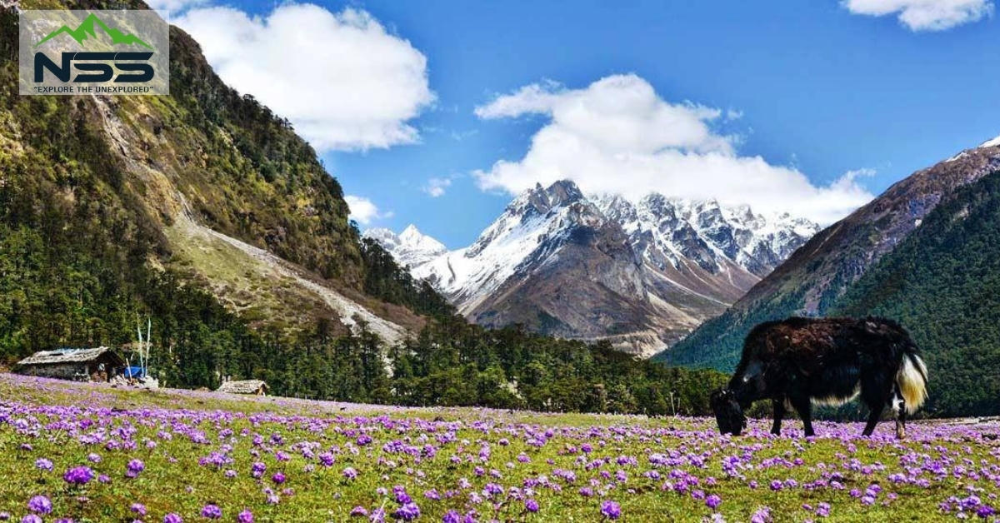
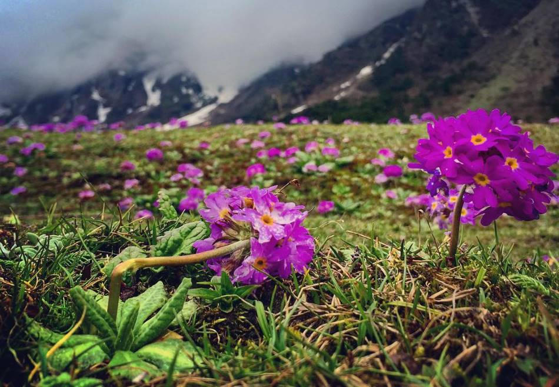
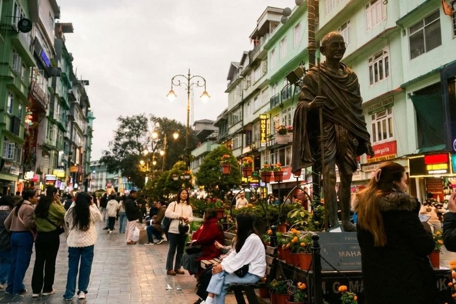

Twin highland villages of North Sikkim — gateway to Gurudongmar Lake and Yumthang Valley
Lachen and Lachung are small settlements in North Sikkim, reached from Gangtok after a long mountain drive. Both require inner-line permits. Lachen (about 2,750 m) is the overnight base for Gurudongmar Lake, one of the highest lakes in India, visited at dawn. Lachung (about 2,700 m) is the base for Yumthang Valley — often called the Valley of Flowers — and, when the road is open, Zero Point closer to the Tibetan plateau.
Nights here are simple: guesthouses, early starts and cold air. Gurudongmar sits above 5,000 metres, so the morning can feel thin. Yumthang is lower and greener, with rhododendron and primula in late spring. The north is usually visited between May and June or October and November, when roads and weather are more reliable.

Yumthang turns into a flower meadow.
Sharp peaks and fewer visitors than early summer.
Deep snow; Gurudongmar and Zero Point are often closed.
Rain and landslides frequently interrupt the road from Gangtok.



Share your month of travel and who is in the group. High altitude and permits shape how this circuit is planned.